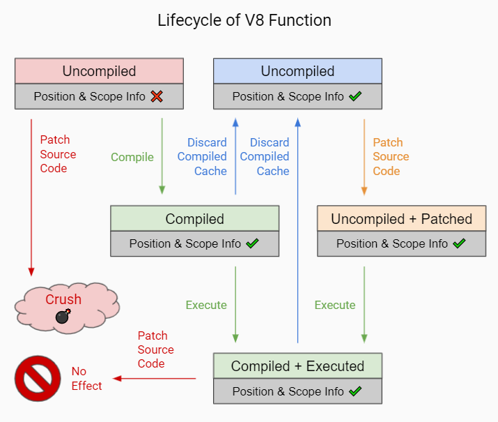

V8 Function#
Function Types#
In general, there are 3 types of function exposed by Javet.
Native functions are V8 built-in functions.
API functions are C++ backed functions. Node.js defined C++ functions and Javet defined Java functions are all API functions.
User Defined functions are JavaScript backed functions. Basically, any function generated via JavaScript code execution is user defined function.
Comparisons#
Type |
V8 Built-in |
C++ or Java |
JavaScript |
Interception |
Change on the Fly |
|---|---|---|---|---|---|
Native |
Yes |
Yes |
No |
Yes |
No |
API |
No |
Yes |
No |
Yes |
No |
User Defined |
No |
No |
Yes |
Yes |
Yes |
Call getJSFunctionType() to determine which function type it is.
Function Interception#
Functions can be intercepted via Javet API. This is equivalent to the capability provided by Node.js. However, there is still a key difference between user defined functions and function interception: local scoped context is visible to user defined function, but invisible to function interceptor. Why? That's a long story related to how closure is implemented in V8 which is not the goal in this section. If local scoped context has to be required, please consider changing the function on the fly which is documented in next section.
IV8ValueObject exposes a set of bindFunction() that allow caller to register function interceptors in automatic or manual ways.
Automatic Registration#
bind()#
bind() scans the input callback receiver for functions decorated by @V8Function and @V8Property. It allows registering many getters / setters and functions in one call.
List<JavetCallbackContext> bind(Object functionCallbackReceiver);
How about Object Type Conversion?#
As V8 only accepts data represented by its own format, Java objects need to be converted to native V8Value objects. Creating native V8Value objects is tricky in the callback receiver. There are typically 2 options.
Use Object Converter - Enhance the Object Converter and it just works as a charm. This is the recommended option. Please refer to
generateArrayWithConverter().
The beauty of the object converter is Javet doesn't intrude into the receiver at all so that application may pass any objects that are untouchable in the application code, e.g. a native object from a 3rd party library. Of course, in that situation, application may ignore the annotation and register the methods directly in the manual registration which is documented in the next section.
Convert via V8Runtime - V8Runtime can be directly used to perform the type conversion. V8Runtime can be manually set by application, or borrowed from the input arguments. Sometimes the callback receiver is not able to borrow
V8Runtimefrom input arguments, it may decorate a setter with@V8RuntimeSetterso that Javet will inject the currentV8Runtime. Please refer togenerateArrayWithoutConverter().
Here is a sample. The first step is to declare callback receiver and callback functions. That is quite easy as the sample code shows.
public class AnnotationBasedCallbackReceiver {
private V8Runtime v8Runtime;
private String stringValue;
public AnnotationBasedCallbackReceiver() {
stringValue = null;
v8Runtime = null;
}
// Javet detects the getter automatically.
@V8Property(name = "stringValue")
public String getStringValue() {
return stringValue;
}
// Javet detects the setter and property name automatically.
@V8Property
public void setStringValue(String stringValue) {
this.stringValue = stringValue;
}
// Instance method with same name and same signature.
@V8Function(name = "echo")
public String echo(String str) {
return str;
}
// Instance method with different name and same signature.
@V8Function(name = "add")
public Integer mathAdd(Integer a, Integer b) {
return a + b;
}
// Instance method with converter for non-primitive objects.
@V8Function(name = "generateArrayWithConverter")
public Object[] generateArrayWithConverter() throws JavetException {
// Converter is able to recognize non-primitive types.
return new Object[]{"a", 1};
}
// Instance method requiring V8Runtime without converter.
@V8Function(name = "generateArrayWithoutConverter")
public V8ValueArray generateArrayWithoutConverter() throws JavetException {
V8ValueArray v8ValueArray = v8Runtime.createV8ValueArray();
v8ValueArray.push("a");
v8ValueArray.push(1);
return v8ValueArray;
}
// Static method.
@V8Function(name = "staticEcho")
public static String staticEcho(String str) {
return str;
}
// Declare the V8RuntimeSetter for dependency injection.
@V8RuntimeSetter
public void setV8Runtime(V8Runtime v8Runtime) {
this.v8Runtime = v8Runtime;
}
}
The second step is to call the functions or properties.
try (V8ValueObject v8ValueObject = v8Runtime.createV8ValueObject()) {
v8Runtime.getGlobalObject().set("a", v8ValueObject);
AnnotationBasedCallbackReceiver annotationBasedCallbackReceiver = new AnnotationBasedCallbackReceiver();
v8ValueObject.bind(annotationBasedCallbackReceiver);
assertEquals("test", v8Runtime.getExecutor("a.echo('test')").executeString());
assertEquals(3, v8Runtime.getExecutor("a.add(1, 2)").executeInteger());
try (V8ValueArray v8ValueArray = v8Runtime.getExecutor(
"a.generateArrayWithConverter()").execute()) {
assertEquals("[\"a\",1]", v8ValueArray.toJsonString());
}
try (V8ValueArray v8ValueArray = v8Runtime.getExecutor(
"a.generateArrayWithoutConverter()").execute()) {
assertEquals("[\"a\",1]", v8ValueArray.toJsonString());
}
assertEquals("static", v8Runtime.getExecutor("a.staticEcho('static')").executeString());
v8Runtime.getExecutor("a.stringValue = 'abc';").executeVoid();
assertEquals("abc", v8Runtime.getExecutor("a.stringValue").executeString());
v8Runtime.getGlobalObject().delete("a");
}
How about Optional and Stream? The built-in converter knows these 2 special types and handles the conversion transparently.
v8ValueObject.bind(new IJavetAnonymous() {
@V8Function
public Optional<String> testOptional(Optional<String> optionalString) {
// Do whatever you want to do.
return Optional.of("abc");
}
@V8Function
public Stream testStream(Stream stream) {
// Do whatever you want to do.
return stream.filter(o -> o instanceof String);
}
});
Can this be Passed in?#
Yes, both @V8Function and @V8Property support thisObjectRequired. Just set it to true and specify the first argument as this.
@V8Property(thisObjectRequired = true)
public ... functionName(V8ValueObject thisObject, ...) {
// function body
}
This feature is especially useful when this needs to be returned. Just simply return the input this object and there is no need to create a new V8 object.
Can Symbol Properties be Intercepted?#
Yes, @V8Property supports symbolType.
None: Not a symbol. (default)
Built-in: ES built-in symbol type.
Custom: User defined symbol type.
@V8Property(symbolType = V8ValueSymbolType.Custom)
public String getValue() {
return value;
}
@V8Property(symbolType = V8ValueSymbolType.Custom)
public void setValue(String value) {
this.value = value;
}
Note
Javet only supports symbols that are registered as global symbols in property interception.
How to Disable Properties or Functions?#
As @V8Function and @V8Property are statically declared, there is no way of selectively disabling them. @V8BindingEnabler is designed to give Javet a hint on which properties or functions are enabled. Here is a sample.
@V8Function
public String disabledFunction() {
return "I am a disabled function.";
}
@V8Property
public String disabledProperty() {
return "I am a disabled property.";
}
@V8BindingEnabler
public boolean isV8BindingEnabled(String methodName) {
if ("disabledFunction".equals(methodName) || "disabledProperty".equals(methodName)) {
return false;
}
return true;
}
@V8BindingEnabler can be used to decorate a method with signature boolean arbitraryMethod(String methodName). Javet calls that method by each method name for whether each method is enabled or not.
The problem is if the function names are refactored to some other names, this string based solution will be broken. So, is there an IDE refactor friendly solution? Yes, JavetReflectionUtils.getMethodNameFromLambda() and JavetReflectionUtils.getMethodNameSetFromLambdas() are able to convert lambda functions to string and string set.
Firstly, prepare a set of to be disabled function names.
// Option 1 with JavetReflectionUtils.getMethodNameFromLambda()
Set<String> disabledFunctionSet = new HashSet<String>(Arrays.asList(
JavetReflectionUtils.getMethodNameFromLambda((Supplier & Serializable) this::disabledFunction),
JavetReflectionUtils.getMethodNameFromLambda((Supplier & Serializable) this::disabledProperty)));
// Option 2 with JavetReflectionUtils.getMethodNameSetFromLambdas()
Set<String> disabledFunctionSet = JavetReflectionUtils.getMethodNameSetFromLambdas(
(Supplier & Serializable) this::disabledFunction,
(Supplier & Serializable) this::disabledProperty);
Secondly, just test whether the method name is in the set or not.
@V8BindingEnabler
public boolean isV8BindingEnabled(String methodName) {
return !disabledFunctionSet.contains(methodName);
}
C'est très bien. Now, the set of to be disabled function names can be updated automatically by the IDE refactor.
How to Unregister Properties or Functions?#
unbind() follows the same way that bind() goes to unregister both properties and functions.
unbindProperty() and unbindFunction() provide precise way of unregistering single property or function.
Can Both JavaScript Function and Property Map to One Java Function?#
Yes, just simply decorate the Java function with both @V8Function and @V8Property.
IJavetAnonymous iJavetAnonymous1 = new IJavetAnonymous() {
@V8Function(name = "testFunction")
@V8Property(name = "testProperty")
public String test() {
return "abc";
}
};
try (V8ValueObject v8ValueObject = v8Runtime.createV8ValueObject()) {
v8Runtime.getGlobalObject().set("a", v8ValueObject);
v8ValueObject.bind(iJavetAnonymous1);
assertEquals("abc", v8Runtime.getExecutor("a['testProperty']").executeString());
assertEquals("abc", v8Runtime.getExecutor("a.testFunction()").executeString());
v8ValueObject.unbind(iJavetAnonymous1);
} finally {
v8Runtime.lowMemoryNotification();
}
Can 2 Java Functions Map to One JavaScript Function and Property?#
Yes, just simply give 2 Java functions the same name.
IJavetAnonymous iJavetAnonymous2 = new IJavetAnonymous() {
@V8Function(name = "test")
public String testFunction() {
return "abc";
}
@V8Property(name = "test")
public JavetEntityFunction testProperty() {
return new JavetEntityFunction("() => 'abc'", JSFunctionType.UserDefined);
}
};
try (V8ValueObject v8ValueObject = v8Runtime.createV8ValueObject()) {
v8Runtime.getGlobalObject().set("a", v8ValueObject);
v8ValueObject.bind(iJavetAnonymous2);
assertEquals("abc", v8Runtime.getExecutor("a['test']()").executeString());
assertEquals("abc", v8Runtime.getExecutor("a.test()").executeString());
v8ValueObject.unbind(iJavetAnonymous2);
} finally {
v8Runtime.lowMemoryNotification();
}
Manual Registration#
Manual registration allows the applications to have full control over every step of the function interception.
boolean bindFunction(String functionName, JavetCallbackContext javetCallbackContext)#
This method is for binding a Java code based function in semi-manual way. The caller is expected to do the following steps.
Create a callback receiver.
Find certain callback method in the callback receiver.
Create
JavetCallbackContextby the callback receiver and callback method.Bind the callback context to a V8 object via
bindFunction.Call the function to trigger the callback.
MockCallbackReceiver mockCallbackReceiver = new MockCallbackReceiver(v8Runtime);
JavetCallbackContext javetCallbackContext = new JavetCallbackContext(
mockCallbackReceiver, mockCallbackReceiver.getMethod("blank"));
V8ValueObject globalObject = v8Runtime.getGlobalObject();
globalObject.bindFunction("blank", javetCallbackContext);
v8Runtime.getExecutor("blank();").executeVoid();
globalObject.delete("blank");
boolean set(String key, V8Value value)#
This method is for binding a Java code based function in complete manual way. The caller is expected to do the following steps.
Create a callback receiver.
Find certain callback method in the callback receiver.
Create
JavetCallbackContextby the callback receiver and callback method.Create
V8ValueFunctionbyJavetCallbackContext.Bind the function to a V8 object via
set.Call the function to trigger the callback.
MockCallbackReceiver mockCallbackReceiver = new MockCallbackReceiver(v8Runtime);
JavetCallbackContext javetCallbackContext = new JavetCallbackContext(
mockCallbackReceiver, mockCallbackReceiver.getMethod("blank"));
V8ValueObject globalObject = v8Runtime.getGlobalObject();
try (V8ValueFunction v8ValueFunction = v8Runtime.createV8ValueFunction(javetCallbackContext);
V8ValueObject a = v8Runtime.createV8ValueObject()) {
globalObject.set("a", a);
a.set("blank", v8ValueFunction);
assertFalse(mockCallbackReceiver.isCalled());
v8Runtime.getExecutor("a.blank();").executeVoid();
assertTrue(mockCallbackReceiver.isCalled());
a.delete("blank");
globalObject.delete("a");
}
boolean bindFunction(String functionName, String codeString)#
This method is for binding a JavaScript code based function.
v8Runtime.getGlobalObject().bindFunction("b", "(x) => x + 1;");
assertEquals(2, v8Runtime.getExecutor("b(1);").executeInteger());
v8Runtime.getGlobalObject().delete("b");
Type Mismatch#
It is very easy to cause type mismatches in JavaScript. The Javet exception is so generic that applications may not be happy with it. So, how to customize the type mismatch exception? The recommended way is to declare the function signature to (V8Value... v8Values) or (Object... objects).
Javet doesn't throw exceptions under this signature in all cases.
Application is the one that performs the argument validation so that the error handling is completely customized.
When dealing with
V8Value..., application is responsible for the type conversion.Variable arguments can be achieved under this signature so that a JavaScript function can be completely mirrored in Java.
Resource Management#
In the function callback, Javet manages the lifecycle of the input arguments and the return value. So, DO NOT close the input arguments, and DO NOT apply try-with-resource to the return value.
Summary#
Obviously, the automatic registration is much better than the manual registration. Please use them wisely.
Change a User Defined JavaScript Function on the Fly#
Why is Changing a User Defined JavaScript Function Important?#
Functions can be changed on the fly at JavaScript code level via Javet API. Why to choose this approach? Because sometimes local scoped context is required which is usually called closure. E.g:
const a = function () {
const b = 1;
return () => b;
}
const x = a();
console.log(x());
// Output is: 1
Local const b is visible to the anonymous function at line 3, but invisible to the function interceptor. Javet provides a way of changing the function at JavaScript source code level so that local scoped context is still visible.
How to Change a User Defined JavaScript Function on the Fly?#
getSourceCode() and setSourceCode(String sourceCode) are designed for getting and setting the source code. setSourceCode(String sourceCode) actually performs the follow steps.
def setSourceCode(sourceCode):
existingSourceCode = v8Function.getSourceCode()
(startPosition, endPosition) = v8Function.getPosition()
newSourceCode = existingSourceCode[:startPosition] + sourceCode + existingSourceCode[endPosition:]
v8Function.setSourceCode(newSourceCode)
v8Function.setPosition(startPosition, startPosition + len(sourceCode))
Caution
setSourceCode(String sourceCode) has radical impacts that may break the execution because all functions during one execution share the same source code but have their own positions. The following diagram shows the rough memory layout. Assuming function (4) has been changed to something else with position changed, function (1) and (2) will not be impacted because their positions remain the same, but function (3) will be broken because its end position is not changed to the end position of function (4) accordingly.

Javet does not scan memory for all impacted function. So, it is caller's responsibility for restoring the original source code after invocation. The pseudo logic is as following.
originalSourceCode = v8ValueFunction.getSourceCode()
v8ValueFunction.setSourceCode(sourceCode)
v8ValueFunction.call(...)
v8ValueFunction.setSourceCode(originalSourceCode)
Why does setSourceCode() sometimes return false? Usually, that means the local scoped context hasn't been generated by V8. getJSScopeType().isClass() == true indicates that state. After callVoid(null), the local scoped context will be created with getJSScopeType().isFunction() == true and setSourceCode() will work. The pseudo logic is as following.
originalSourceCode = v8ValueFunction.getSourceCode()
if (v8ValueFunction.getJSScopeType().isClass()) {
try {
v8ValueFunction.callVoid(null);
// Now v8ValueFunction.getJSScopeType().isFunction() is true
} catch (JavetException e) {
}
}
v8ValueFunction.setSourceCode(sourceCode) // true
v8ValueFunction.call(...)
v8ValueFunction.setSourceCode(originalSourceCode)
Caution
The source code is shared among all function objects. So the caller is responsible for restoring the original source code, otherwise the next function call will likely fail because the source code of the next function call is incorrect.
The source code must be verified by compile(). Malformed source code will crash V8.
The source code must not end with any of ' ', ';', '\n', though technically the source code is valid. Otherwise, V8 will crash.
The rough lifecycle of a V8 function is as following.
What is the Source Code of a Function in V8?#
When V8 calculates start position of a function, it does not include the keyword function and function name. E.g.
function abc(a, b, c) { ... } // Source code is (a, b, c) { ... }
(a, b, c) => { ... } // Source code is (a, b, c) => { ... }
So, please always discard the keyword function and function name when calling setSourceCode().
Automatic Type Conversion#
Javet is capable of automatically converting its internal V8Value to primitive types by inspecting the function signature. So, the following 4 functions are all the same and valid.
// Option 1
public String echo(String str) {
return str;
}
// Option 2
public String echo(V8Value arg) {
return arg == null ? null : arg.toString();
}
// Option 3
public V8Value echo(String str) {
return v8Runtime.createV8ValueString(str);
}
// Option 4
public V8Value echo(V8Value arg) throws JavetException {
return arg.toClone();
}
// All 4 functions above can be handled in Javet as the following function
echo("123");
Primitive types can be in either primitive or object form in the method signature. Javet just automatically handles the type conversion and it is null safe.
Note
boolean:boolean,Boolean,null⟶️false,undefined⟶️false.byte,integer,long,Short:int,Integer,long,Long,short,Short,byte,Byte,null⟶️0,undefined⟶️0.char:char,Char,null⟶️\0,undefined⟶️\0.float,double:float,Float,double,Double,int,Integer,long,Long,short,Short,byte,Byte,null⟶️0,undefined⟶️0.
For instance: The following 4 functions are all the same and valid.
// Option 1
public int echo(Integer i) {
return i == null? 0: i.intValue();
}
// Option 2
public Integer echo(int arg) {
return Integer.valueOf(int);
}
// Option 3
public V8ValueInteger echo(int i) {
return v8Runtime.createV8ValueInteger(i);
}
// Option 4
public Integer echo(V8ValueInteger i) {
return i == null? 0: i.getValue();
}
Can the default values be changed in terms of null safety? Yes, Object Converter allows overriding the default values.
Call vs. Invoke#
In one sentence, call() belongs to function and invoke() belongs to object.
Call#
call() is almost equivalent to Function.prototype.call(). It allows the caller to specify receiver. Besides, Javet combines Function.prototype.call() and Function.prototype.apply() because Java is friendly to varargs.
func.call(object, a, b, c); // func.call(object, a, b, c); with V8 object returned
func.callVoid(object, a, b, c); // func.call(object, a, b, c); without return
func.callObject(object, a, b, c); // func.call(object, a, b, c); with Java object returned
func.callPrimitive(object, a, b, c); // func.call(object, a, b, c); with Java primitive returned
func.callAsConstructor(a, b, c); // new func(a, b, c);
Invoke#
invoke() takes function name and arguments, but not receiver because the object itself is the receiver. So the API is almost identical to call() except for the first argument.
object.invoke("func", a, b, c); // object.func(a, b, c); with V8 object returned
object.invokeVoid("func", a, b, c); // object.func(a, b, c); without return
object.invokeObject("func", a, b, c); // object.func(a, b, c); with Java object returned
object.invokePrimitive("func", a, b, c); // object.func(a, b, c); with Java primitive returned
invoke() is heavily used in Javet so that the JNI implementation can be dramatically simplified. In few extreme cases, V8 doesn't expose its C++ API and invoke() appears to be the only way. So, feel free to invoke all kinds of JS API despite of the deficit of Javet built-in API.
How about Bind?#
Function.prototype.bind() is simply a set() in Javet.
// func.bind(object); func(a, b, c); with return
object.set("func", func); object.invoke("func", a, b, c);
// func.bind(object); func(a, b, c); without return
object.set("func", func); object.invokeVoid("func", a, b, c);
Context and Scope Info#
Below is the quote from the V8 source code for the context and scope info. Javet allows getContext(), setContext() and copyScopeInfoFrom() to borrow the context and scope info from another function. This simulates the live editing in the debug mode. Please note that setScriptSource() is required if the lexical context is different, otherwise a compilation error will be thrown.
Note
JSFunctions are pairs (context, function code), sometimes also called closures. A Context object is used to represent function contexts and dynamically pushed 'with' contexts (or 'scopes' in ECMA-262 speak).
At runtime, the contexts build a stack in parallel to the execution stack, with the top-most context being the current context. All contexts have the following slots:
- [ scope_info ] This is the scope info describing the current context. It
contains the names of statically allocated context slots, and stack-allocated locals. The names are needed for dynamic lookups in the presence of 'with' or 'eval', and for the debugger.
[ previous ] A pointer to the previous context.
- [ extension ] Additional data. This slot is only available when
ScopeInfo::HasContextExtensionSlot returns true.
For native contexts, it contains the global object. For module contexts, it contains the module object. For await contexts, it contains the generator object. For var block contexts, it may contain an "extension object". For with contexts, it contains an "extension object".
An "extension object" is used to dynamically extend a context with additional variables, namely in the implementation of the 'with' construct and the 'eval' construct. For instance, Context::Lookup also searches the extension object for properties. (Storing the extension object is the original purpose of this context slot, hence the name.)
In addition, function contexts with sloppy eval may have statically allocated context slots to store local variables/functions that are accessed from inner functions (via static context addresses) or through 'eval' (dynamic context lookups). The native context contains additional slots for fast access to native properties.
Finally, with Harmony scoping, the JSFunction representing a top level script will have the ScriptContext rather than a FunctionContext. Script contexts from all top-level scripts are gathered in ScriptContextTable.
Tips#
How to Avoid Argument Type Mismatches?#
JavaScript function tolerates argument type or count mismatches because of its nature as a dynamic scripting language. But, Java is a strongly typed and static language. In the function callback from JavaScript to Java, argument type and count must conform with the corresponding Java method. Otherwise, the Java reflection API throws an exception. Javet performs throughout checks against those mismatches. The Javet checks sometimes cause unexpected behaviors in the applications. So, how to achieve the JavaScript flavored variable arguments?
The solution is very simple: Declare varargs in Java.
@V8Function
public V8Value sampleWithoutThis(V8Value... v8Values) throws JavetException {
// Do whatever you want to do.
}
@V8Function(thisObjectRequired = true)
public V8Value sampleWithThis(V8ValueObject thisObject, V8Value... v8Values) throws JavetException {
// Do whatever you want to do.
}
Note
Declaring
V8Value... v8Valuescan bypass the Javet argument type and count checks so that applications take the full responsibility.Applications may check the argument count, throw excessive arguments, assign default arguments, etc.
Applications may test the argument type, perform custom type conversion, etc.
How to Handle Argument Count Mismatches?#
Javet follows 2 simple rules for the argument count mismatches so that the Java callback function behaves the same as the JavaScript function does.
Redundant parameters will be dropped.
Absent parameters will be filled by the default values.
Please review the test cases for more detail.